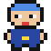
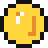
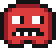
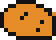

Черепашка хороша для рисования, но для игр медленная и неудобная. Настоящие 2D-игры на Python делают с помощью библиотеки Pygame Zero. Библиотека — это набор готовых команд, который кто-то написал за тебя. С Pygame Zero можно сделать игру с картинками, звуком и управлением.
Pygame Zero работает поверх другой библиотеки, pygame. Обычный pygame не устанавливается на новую версию Python, которая стоит в Thonny. Поэтому ставим его современную версию — pygame-ce. Это делается командами, но только один раз.
python -m pip install pygame-ce
python -m pip install numpy
python -m pip install --no-deps pgzero
Если в конце каждой команды написано Successfully installed, всё получилось. Окно можно закрыть.
Если раньше ты уже ставил pgzero через «Управление пакетами» и видишь ошибку mixer module not available, сначала напиши python -m pip uninstall pygame, а потом три команды выше.
Создай в папке python новую папку igra1 и сохрани в неё эту программу:
import pgzrun WIDTH = 600 HEIGHT = 400 def draw(): screen.fill("darkblue") pgzrun.go()
Нажми F5. Откроется синее окно 600 на 400 точек. Закрыть его можно крестиком. Если окно не закрывается, нажми в Thonny красную кнопку «Стоп».
Важно: игру на Pygame Zero нужно сначала сохранить в файл, а потом запускать. Если запустить несохранённую программу, будет ошибка 'import pgzrun' only works when you are running a Python file. Тогда нажми Ctrl+S, сохрани файл в папку игры и запусти снова.
При сохранении смотри, в какую папку сохраняешь. Это должна быть твоя папка python/igra1, а не папка, которую предложит Thonny.
import pgzrun — подключить Pygame Zero. Всегда первая строчка.WIDTH и HEIGHT — ширина и высота окна. Большие буквы — так договорились в Pygame Zero.def draw(): — функция, которая рисует экран. Ты её только объясняешь, а вызывает её сама Pygame Zero, много раз в секунду.screen.fill("darkblue") — залить экран цветом.pgzrun.go() — запустить игру. Всегда последняя строчка."darkgreen", "purple", "skyblue".screen.fill((255, 120, 0)) и подбери свой цвет.У черепашки центр окна был (0, 0). В Pygame Zero не так: (0, 0) — это левый верхний угол. x растёт вправо, а y растёт вниз. Так устроены почти все игры.
В окне 600 на 400 центр — (300, 200), а правый нижний угол — (600, 400).
import pgzrun WIDTH = 600 HEIGHT = 400 def draw(): screen.fill("skyblue") screen.draw.filled_circle((500, 80), 40, "yellow") screen.draw.filled_rect(Rect((0, 320), (600, 80)), "darkgreen") screen.draw.filled_rect(Rect((100, 220), (120, 100)), "brown") screen.draw.circle((300, 200), 30, "white") screen.draw.text("Моя игра", (20, 20), fontsize=40, color="white") pgzrun.go()
| команда | что рисует |
|---|---|
screen.draw.filled_circle((x, y), r, цвет) | закрашенный круг с центром в (x, y) и радиусом r |
screen.draw.circle((x, y), r, цвет) | только контур круга |
screen.draw.filled_rect(Rect((x, y), (w, h)), цвет) | прямоугольник: левый верхний угол (x, y), ширина w, высота h |
screen.draw.line((x1, y1), (x2, y2), цвет) | линия |
screen.draw.text(текст, (x, y), fontsize=…, color=…) | надпись |
Порядок важен: то, что нарисовано позже, оказывается сверху. Поэтому screen.fill всегда первая — она закрашивает всё старое.
Если выбирать места прямо в draw, звёзды будут мигать. Выбери их один раз до draw и сохрани в список.
Любая игра на Pygame Zero 60 раз в секунду делает две вещи:
update() — меняет то, что происходит: двигает героя, считает очки.draw() — рисует всё заново, уже в новых местах.Так же устроено кино: много картинок в секунду, и на каждой всё чуть-чуть сдвинуто. Глазу кажется, что всё плавно двигается.
import pgzrun WIDTH = 600 HEIGHT = 400 x = 0 def update(): global x x += 3 if x > WIDTH: x = 0 def draw(): screen.fill("black") screen.draw.filled_circle((x, 200), 25, "orange") pgzrun.go()
В update мяч сдвигается на 3 точки вправо. Если ушёл за край — возвращается к левому. global x нужен, как в модуле 4: функция меняет переменную снаружи.
Чтобы мяч отскакивал, храним не только место, но и скорость. Когда мяч долетел до края, скорость меняет знак: летел вправо — полетит влево.
import pgzrun WIDTH = 600 HEIGHT = 400 x = 300 y = 200 speed_x = 4 speed_y = 3 def update(): global x, y, speed_x, speed_y x += speed_x y += speed_y if x < 25 or x > WIDTH - 25: speed_x = -speed_x if y < 25 or y > HEIGHT - 25: speed_y = -speed_y def draw(): screen.fill("black") screen.draw.filled_circle((x, y), 25, "orange") pgzrun.go()
Число 25 — радиус мяча. Без него мяч наполовину уходил бы за край.
Настоящий мяч не летает с одной скоростью: он падает всё быстрее и быстрее. Чтобы так было и в игре, будем каждый кадр немного менять не место мяча, а его скорость: speed_y += 0.3.
Помни, что y растёт вниз. Значит, плюс к скорости — это толчок вниз.
import pgzrun WIDTH = 600 HEIGHT = 400 x = 300 y = 100 speed_y = 0 def update(): global y, speed_y speed_y += 0.3 y += speed_y if y > HEIGHT - 25: y = HEIGHT - 25 speed_y = -speed_y def draw(): screen.fill("black") screen.draw.filled_circle((x, y), 25, "orange") screen.draw.text(f"скорость: {speed_y:.1f}", (10, 10), fontsize=30, color="white") pgzrun.go()
Запусти и следи за скоростью в углу экрана. Вот что происходит за один прыжок:
| мяч | скорость | что видно |
|---|---|---|
| наверху | 0 | на миг зависает |
| падает | растёт: 1, 2, … 12 | летит всё быстрее |
| ударился о пол | 12 → −12 | разворачивается |
| летит вверх | −12, −11, … 0 | тормозит |
Толчок вниз разгоняет мяч, пока он падает, и тормозит, пока он летит вверх. Поэтому мяч поднимается почти на ту же высоту, откуда упал.
Строчка y = HEIGHT - 25 ставит мяч ровно на пол. Без неё мяч проваливается под пол и застревает там.
Сейчас мяч прыгает вечно. Настоящий мяч при каждом ударе о пол теряет часть скорости, и прыжки становятся всё ниже. Замени строчку speed_y = -speed_y на эту:
speed_y = -speed_y * 0.8
Теперь после удара мяч летит вверх со скоростью 0.8 от прежней. Каждый прыжок ниже предыдущего, и в конце мяч ложится на пол.
0.8 числа 0.5 и 0.95. Какой мяч похож на резиновый, а какой на мешок с песком?0.05 — как на Луне, 1 — очень тяжёлая планета.В Pygame Zero есть готовая штука keyboard. В update можно спрашивать её: нажата ли сейчас клавиша?
import pgzrun WIDTH = 600 HEIGHT = 400 x = 300 y = 200 def update(): global x, y if keyboard.left: x -= 5 if keyboard.right: x += 5 if keyboard.up: y -= 5 if keyboard.down: y += 5 def draw(): screen.fill("black") screen.draw.filled_circle((x, y), 20, "lime") pgzrun.go()
Пока держишь стрелку, круг едет. Можно нажать две стрелки сразу и ехать по диагонали. Заметь: вверх — это минус по y, ведь y растёт вниз.
Буквы проверяются так: keyboard.a, keyboard.w. Пробел — keyboard.space.
Сейчас герой может уехать за экран. Это легко исправить: после движения проверить края.
import pgzrun WIDTH = 600 HEIGHT = 400 x = 300 def update(): global x if keyboard.left: x -= 5 if keyboard.right: x += 5 if x < 20: x = 20 if x > WIDTH - 20: x = WIDTH - 20 def draw(): screen.fill("black") screen.draw.filled_circle((x, 360), 20, "lime") pgzrun.go()
x, ни по y.Спрайт — это картинка, которая двигается по экрану: герой, монетка, враг. В Pygame Zero спрайт называется Actor — «актёр».
Мы приготовили набор: скачать sprites.zip. Внутри папка images с картинками:




Названия: hero, coin, enemy, star, heart, rock.
Распакуй архив так, чтобы папка images лежала рядом с файлом игры:
igra1/
igra.py
images/
hero.png
coin.png
...
Свои картинки тоже можно: нарисуй в Paint, сохрани как PNG в папку images. Имя файла — только маленькие английские буквы, без пробелов.
import pgzrun WIDTH = 600 HEIGHT = 400 hero = Actor("hero", (300, 200)) def update(): if keyboard.left: hero.x -= 5 if keyboard.right: hero.x += 5 if keyboard.up: hero.y -= 5 if keyboard.down: hero.y += 5 def draw(): screen.fill("darkgreen") hero.draw() pgzrun.go()
Actor("hero", (300, 200)) — создать актёра из картинки hero.png и поставить в точку (300, 200). Расширение .png не пишут.hero.x и hero.y — где он сейчас. Их можно менять.hero.draw() — нарисовать актёра.Заметь: global больше не нужен. Мы не кладём в hero новое значение, а только меняем его x и y.
Если появилась ошибка No image found like 'hero', значит папка images лежит не там. Проверь, что она рядом с файлом игры.
Почти в любой игре нужно знать, что два спрайта коснулись: герой подобрал монету, враг поймал героя. У актёров для этого есть colliderect:
import pgzrun import random WIDTH = 600 HEIGHT = 400 hero = Actor("hero", (300, 200)) coin = Actor("coin", (100, 100)) def move_coin(): coin.x = random.randint(30, WIDTH - 30) coin.y = random.randint(30, HEIGHT - 30) def update(): if keyboard.left: hero.x -= 5 if keyboard.right: hero.x += 5 if keyboard.up: hero.y -= 5 if keyboard.down: hero.y += 5 if hero.colliderect(coin): move_coin() def draw(): screen.fill("darkgreen") coin.draw() hero.draw() pgzrun.go()
hero.colliderect(coin) отвечает True, если картинки героя и монеты хоть чуть-чуть перекрываются. Тогда монета прыгает в случайное место.
Есть ещё collidepoint: проверяет, попадает ли точка в картинку. Пригодится в уроке про мышь.
print.Теперь посчитаем собранные монеты и покажем счёт. Переменную score меняем в update, а рисуем в draw:
import pgzrun import random WIDTH = 600 HEIGHT = 400 hero = Actor("hero", (300, 200)) coin = Actor("coin", (100, 100)) score = 0 def move_coin(): coin.x = random.randint(30, WIDTH - 30) coin.y = random.randint(30, HEIGHT - 30) def update(): global score if keyboard.left: hero.x -= 5 if keyboard.right: hero.x += 5 if keyboard.up: hero.y -= 5 if keyboard.down: hero.y += 5 if hero.colliderect(coin): score += 1 move_coin() def draw(): screen.fill("darkgreen") coin.draw() hero.draw() screen.draw.text(f"Монеты: {score}", (10, 10), fontsize=36, color="yellow") pgzrun.go()
Pygame Zero умеет вызывать функцию через заданное время. clock.schedule_interval(tick, 1.0) — «вызывай tick каждую секунду». Так делают таймер:
import pgzrun WIDTH = 600 HEIGHT = 400 time_left = 30 def tick(): global time_left if time_left > 0: time_left -= 1 def draw(): screen.fill("black") screen.draw.text(f"Осталось: {time_left}", center=(300, 200), fontsize=60, color="white") clock.schedule_interval(tick, 1.0) pgzrun.go()
center=(300, 200) ставит надпись по центру этой точки.
Один враг — скучно. Пусть они появляются каждую секунду сверху и падают вниз. А герой уворачивается. Врагов храним в списке, как предметы в рюкзаке из модуля 5.
import pgzrun import random WIDTH = 600 HEIGHT = 400 hero = Actor("hero", (300, 360)) rocks = [] def add_rock(): rock = Actor("rock", (random.randint(20, WIDTH - 20), -20)) rocks.append(rock) def update(): if keyboard.left: hero.x -= 6 if keyboard.right: hero.x += 6 for rock in rocks: rock.y += 4 if rock.colliderect(hero): print("Попал!") for rock in rocks[:]: if rock.y > HEIGHT + 20: rocks.remove(rock) def draw(): screen.fill("midnightblue") hero.draw() for rock in rocks: rock.draw() clock.schedule_interval(add_rock, 1.0) pgzrun.go()
add_rock создаёт новый камень над экраном и кладёт его в список.update цикл двигает каждый камень вниз и проверяет, не задел ли он героя.rocks[:] — это копия списка. Удалять элементы из списка, по которому идёт цикл, нельзя: Python запутается. Поэтому идём по копии, а удаляем из настоящего.heart в углу экрана.Если в программе есть функция on_mouse_down, Pygame Zero вызывает её при каждом щелчке. В параметр pos она получает место щелчка.
import pgzrun import random WIDTH = 600 HEIGHT = 400 star = Actor("star", (300, 200)) score = 0 def on_mouse_down(pos): global score if star.collidepoint(pos): score += 1 star.x = random.randint(30, WIDTH - 30) star.y = random.randint(30, HEIGHT - 30) def draw(): screen.fill("black") star.draw() screen.draw.text(f"Очки: {score}", (10, 10), fontsize=36, color="white") pgzrun.go()
Щёлкай по звезде: за каждое попадание +1, и звезда прыгает в другое место.
keyboard.space в update отвечает «да», всё время пока клавиша зажата. А иногда нужно сделать что-то один раз на каждое нажатие: выстрел, прыжок. Для этого есть on_key_down:
import pgzrun WIDTH = 600 HEIGHT = 400 jumps = 0 def on_key_down(key): global jumps if key == keys.SPACE: jumps += 1 def draw(): screen.fill("black") screen.draw.text(f"Прыжков: {jumps}", center=(300, 200), fontsize=50, color="white") pgzrun.go()
Названия клавиш: keys.SPACE, keys.RETURN (Enter), keys.UP, keys.A и так далее.
Самый простой способ — сайт sfxr.me. Там можно сделать звуки в стиле старых игр. Нажимай кнопки слева: «Pickup/Coin» — звук монетки, «Explosion» — взрыв, «Jump» — прыжок. Понравился звук — нажми «Export .WAV».
Звуки кладут в папку sounds рядом с файлом игры, как картинки в images. Имена — маленькими английскими буквами: coin.wav, boom.wav.
Звук из файла sounds/coin.wav проигрывается так: sounds.coin.play(). Добавь это туда, где герой подбирает монету:
import pgzrun import random WIDTH = 600 HEIGHT = 400 hero = Actor("hero", (300, 200)) coin = Actor("coin", (100, 100)) def update(): if keyboard.left: hero.x -= 5 if keyboard.right: hero.x += 5 if keyboard.up: hero.y -= 5 if keyboard.down: hero.y += 5 if hero.colliderect(coin): sounds.coin.play() coin.x = random.randint(30, WIDTH - 30) coin.y = random.randint(30, HEIGHT - 30) def draw(): screen.fill("darkgreen") coin.draw() hero.draw() pgzrun.go()
Фоновую музыку кладут в папку music (файл .mp3 или .ogg) и включают одной строчкой перед pgzrun.go(): music.play("theme"). Она будет играть по кругу.
У настоящей игры есть разные экраны: заставка, сама игра, «игра окончена». Чтобы программа знала, что сейчас показывать, заводят переменную state.
import pgzrun import random WIDTH = 600 HEIGHT = 400 hero = Actor("hero", (300, 360)) rocks = [] state = "menu" score = 0 def start(): global state, score state = "play" score = 0 rocks.clear() hero.x = 300 def add_rock(): if state == "play": rocks.append(Actor("rock", (random.randint(20, WIDTH - 20), -20))) def on_key_down(key): if key == keys.SPACE and state != "play": start() def update(): global state, score if state != "play": return if keyboard.left: hero.x -= 6 if keyboard.right: hero.x += 6 for rock in rocks[:]: rock.y += 5 if rock.colliderect(hero): state = "over" elif rock.y > HEIGHT + 20: rocks.remove(rock) score += 1 def draw(): screen.fill("midnightblue") if state == "menu": screen.draw.text("КАМНЕПАД", center=(300, 160), fontsize=70, color="yellow") screen.draw.text("Пробел — начать", center=(300, 240), fontsize=36, color="white") elif state == "play": hero.draw() for rock in rocks: rock.draw() screen.draw.text(f"Очки: {score}", (10, 10), fontsize=36, color="white") else: screen.draw.text("ИГРА ОКОНЧЕНА", center=(300, 160), fontsize=60, color="red") screen.draw.text(f"Очки: {score}", center=(300, 220), fontsize=40, color="white") screen.draw.text("Пробел — ещё раз", center=(300, 280), fontsize=30, color="white") clock.schedule_interval(add_rock, 0.7) pgzrun.go()
state бывает "menu", "play" или "over".draw смотрит на state и рисует нужный экран.update ничего не делает, если сейчас не игра: return сразу заканчивает функцию.start() возвращает всё к началу: обнуляет счёт, убирает камни. Так игру можно перезапустить без закрытия окна.Теперь ты знаешь всё, чтобы сделать настоящую 2D-игру. Выбери одну из идей или придумай свою.